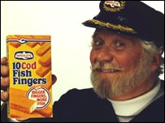

Fish Fingers
In 1956 Birds Eye introduces the Fish Finger as an ideal way to encourage Australian children to eat more fish. The Birds Eye Fish Finger will go on to become an icon. The number of Birds Eye Fish Fingers sold in Australia each year would cover an area twice the size of Tasmania. Laid end to end, these Fish Fingers would be twice the length of the Great Wall of China.Simple, straightforward ingredients
Our fish fingers are made from nothing but deliciously simple ingredients, so you know exactly what’s in your family’s food. Whether coated in our light and crispy batter or in our golden breadcrumbs, we make them from nothing but 100% wild-caught fillet. It really is as simple as that.
Packed with goodness
Our Fish Fingers are a fantastic source of protein and minerals. Our Omega 3 Fish Fingers are a great source of Omega-3, which supports children’s normal growth and development. All of our Fish Fingers are a delicious and easy way to create healthy meals for your family.
Captain Birdseye with his first invention.

In 1971 an obituary for Captain Birds Eye appeared in the Times newspaper after it was decided to retire him. But retirement was temporary and he returned in 1974

“As brand leader for fish fingers, which is our biggest category, we need to consistently make sure we have the best fish fingers. That is just as as important as launching into new areas.” Challouma says.